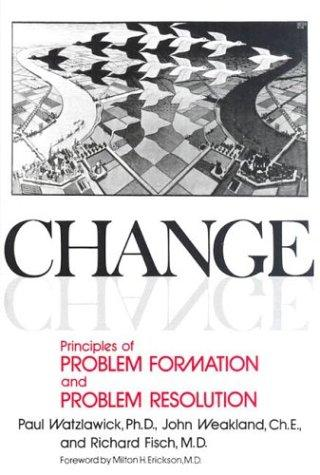

Módulo 02 / Apartado 2 de 5
Nardone: el problema lo sostiene lo que haces
La escuela que dice que dejes de buscar la causa. Y que está en el mismo módulo que la que dice lo contrario, a propósito.
De dónde sale esto, que no es de una escuela de negocios
Giorgio Nardone es psicoterapeuta italiano, cofundador del Centro di Terapia Strategica de Arezzo. Su terreno original son las fobias, los ataques de pánico y los trastornos alimentarios. Que su método acabe en un temario de resolución de problemas de empresa dice bastante de lo bien que viaja.
En los años cincuenta, un grupo de investigadores de Palo Alto, en California, empezó a mirar los problemas psicológicos de otra manera. En vez de bucear en la infancia del paciente buscando la causa, se fijaron en qué está pasando ahora mismo que mantiene el problema en pie.
El nombre grande de ahí es Paul Watzlawick, y la idea que exportaron es la que va a ordenar todo este apartado: un problema no se sostiene por su origen, se sostiene por lo que se hace con él día a día. Nardone es heredero directo de esa escuela.
La tesis: la solución intentada
Aquí está todo. Y es una herejía en un módulo donde la escuela de al lado consiste en buscar la causa con lupa.
La secuencia típica es esta. Aparece una dificultad. Reaccionas de la manera que parece sensata. No funciona, así que aplicas más de lo mismo, con más intensidad. Y esa insistencia se convierte en el mecanismo que mantiene el problema vivo.
Las técnicas
Nardone las llama estratagemas, y vienen de la tradición del pensamiento estratégico chino tanto como de la clínica. Estas cuatro son las que viajan bien fuera de la consulta.
La pregunta es literal: si quisieras que esto fuera aún peor, ¿qué harías? Se hace en serio y por escrito. Lo que aparece en esa lista suele coincidir de manera incómoda con lo que ya se está haciendo, y ese descubrimiento es lo que desbloquea comportamientos que llevaban años enquistados. Es la misma operación que la inversión de de Bono y la de Munger, formalizada.
Describir con detalle el día después de estar resuelto. Qué haces esa mañana que hoy no puedes hacer, quién lo nota, en qué se ve. No genera soluciones: genera criterios de solución, que es justo lo que no se te ocurre mirando fijamente el problema.
El que quiere llegar a la cima no planifica desde la base hacia arriba: planifica desde la cima hacia abajo. Fracciona el objetivo hacia atrás desde el estado final, no hacia delante desde el actual. Y sí, es lo contrario de lo que hace cualquier plan de proyecto, que empieza por la primera tarea y va sumando.
El primer movimiento tiene que ser lo bastante pequeño como para no activar la resistencia del sistema. Un cambio grande convoca a todos sus defensores; uno diminuto pasa por debajo del radar y crea el precedente.
Una que no viaja tan bien. En su obra clínica está también «la peor fantasía», que consiste en dedicar cada día un rato acotado a evocar deliberadamente lo peor que podría pasar. Funciona con la ansiedad y el pánico por razones que tienen que ver con la paradoja: al obligarte a producir el miedo, se disuelve. Fuera de la consulta la he visto citada mucho y aplicada bien poco, así que la dejo señalada y no la vendo.
Qué opina Recuenco de él
Esto conviene saberlo porque el temario oficial pone a Nardone al nivel de Rumelt, y él no lo ve así.
En la turra donde explica su marco de las cuatro macrodisciplinas, coloca a Nardone en la periferia. El razonamiento: toca el factor humano y roza el business acumen, pero no toca ni la tecnología ni las ciencias de la complejidad. Y añade que el hecho de que su método se llame Problem Solving Estratégico es una coincidencia de nombre, no una equivalencia de alcance, porque lo suyo son fobias y modificación de conducta.
Dicho eso, usa sus herramientas constantemente. La inversión, el escenario más allá y el escalador aparecen por todo el corpus, con estos nombres o con otros.
El límite, y es serio
Este método es difícil de auditar. La lógica de un análisis causal se puede revisar en una hoja: los pasos están, se ven, se discuten. Una intervención estratégica depende del criterio de quien la diseña, y cuando hay que justificar la decisión ante un comité, eso es un problema real y no una pega teórica.
La combinación que funciona: usar a Nardone para desatascar y documentar con el método del módulo 5. Bloqueas la solución intentada, observas cómo responde el sistema, y luego escribes el análisis formal con lo que has aprendido.
Fuentes de este apartado
Las turras de las que sale
La turra del marco de las cuatro macrodisciplinas. Es donde coloca a Nardone en la periferia y explica el criterio con el que lo hace. También coloca ahí a Munger, con dos macrodisciplinas y media.
Soluciones de mierda a problemas complejosTurra · 43 tweetsEl eje con las tres escuelas, con Nardone en el medio entre el chispazo y el trabajo estratégico. Y la explicación de por qué él se coloca en el extremo de Rumelt: la genialidad no se puede convocar cuando hace falta.
Los libros

Change: Principles of Problem Formation and Problem ResolutionWatzlawick, Weakland y Fisch · 1974El libro fundacional de la escuela de Palo Alto, del que Nardone es heredero directo. De aquí sale la distinción entre cambio 1 —moverse dentro del sistema, más de lo mismo— y cambio 2, que cambia el sistema. Y de aquí sale la idea que Nardone convierte en método: que la solución intentada es lo que sostiene el problema. Corto y con casos clínicos que se leen como cuentos.
sin portada Problem Solving EstratégicoGiorgio Nardone · HerderEl subtítulo es «el arte de encontrar soluciones a problemas irresolubles». Corto, con casos clínicos y de empresa mezclados. Es el libro del apartado y no hay traducción mejor al lenguaje de negocio, así que toca hacer la traducción uno mismo mientras lee.